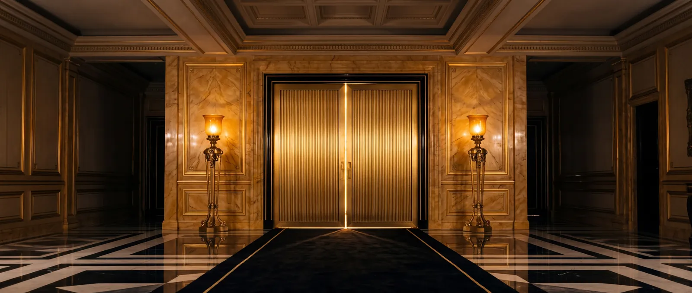

Error 404
This room is closed.
Nothing is kept behind this door tonight. The collection is still open.
Return to the collection
Error 404
Nothing is kept behind this door tonight. The collection is still open.
Return to the collection